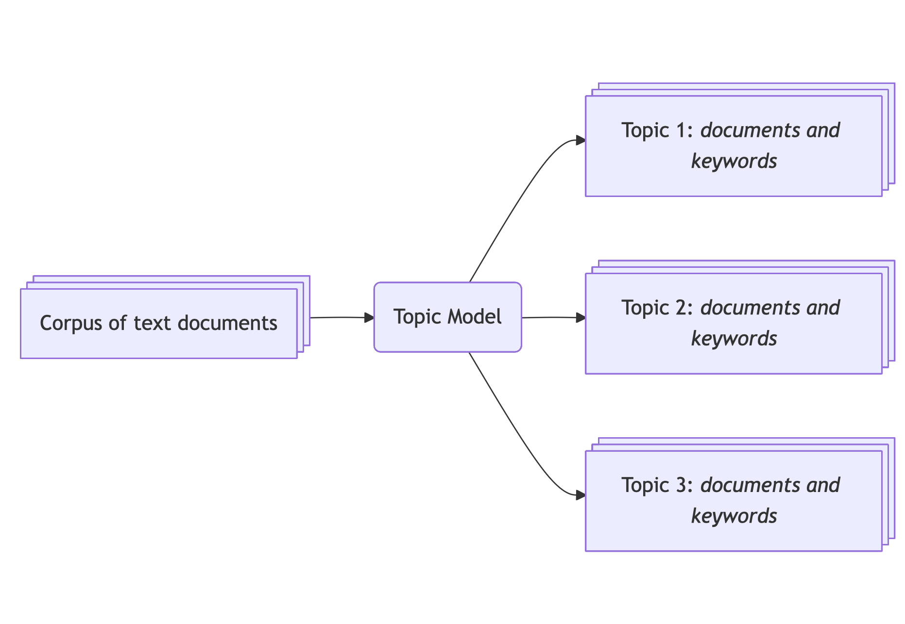
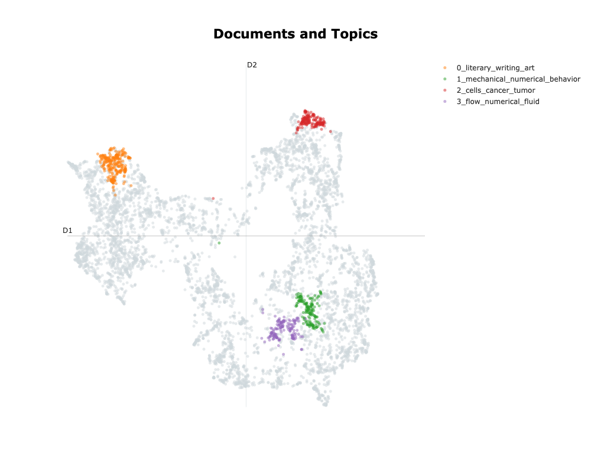
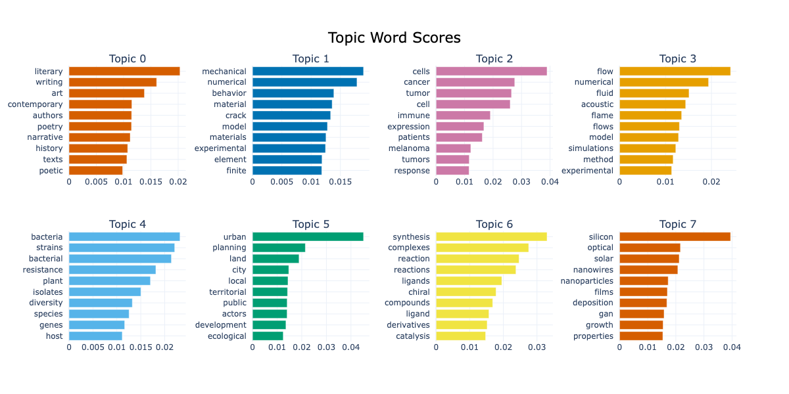
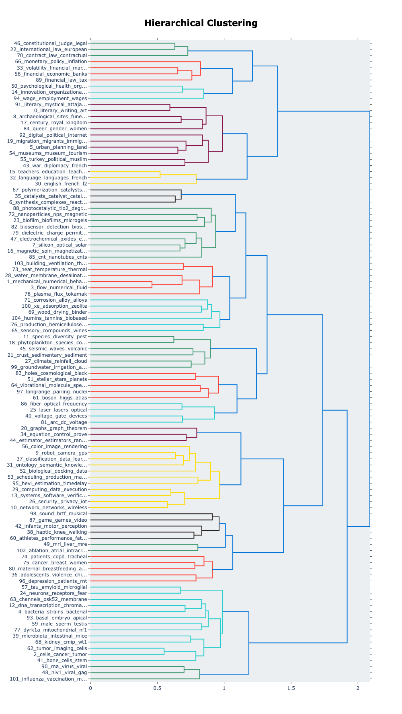
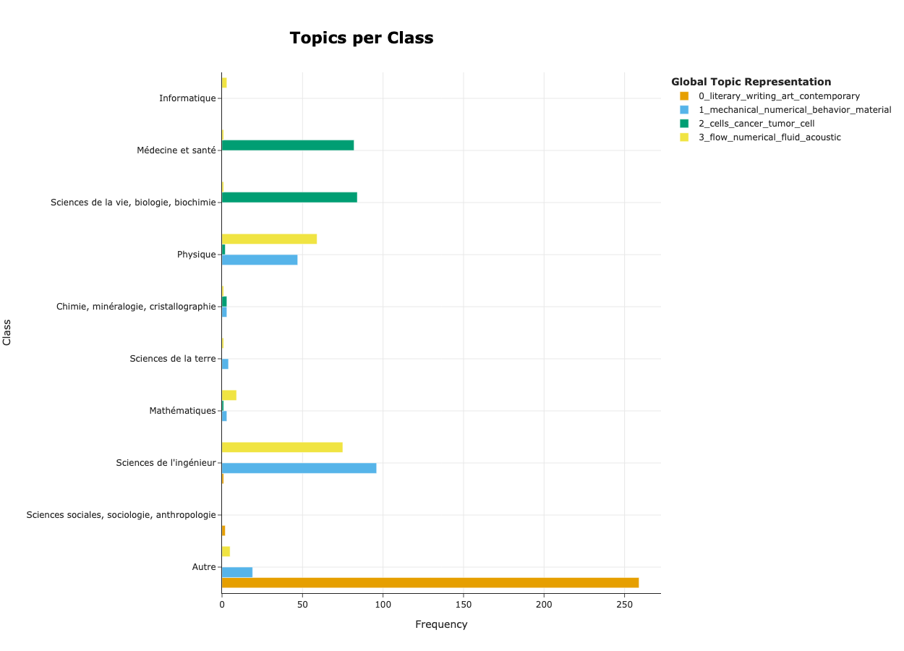
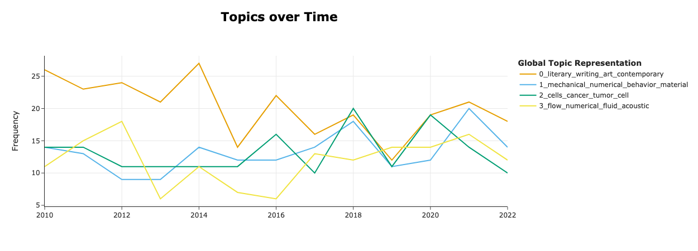
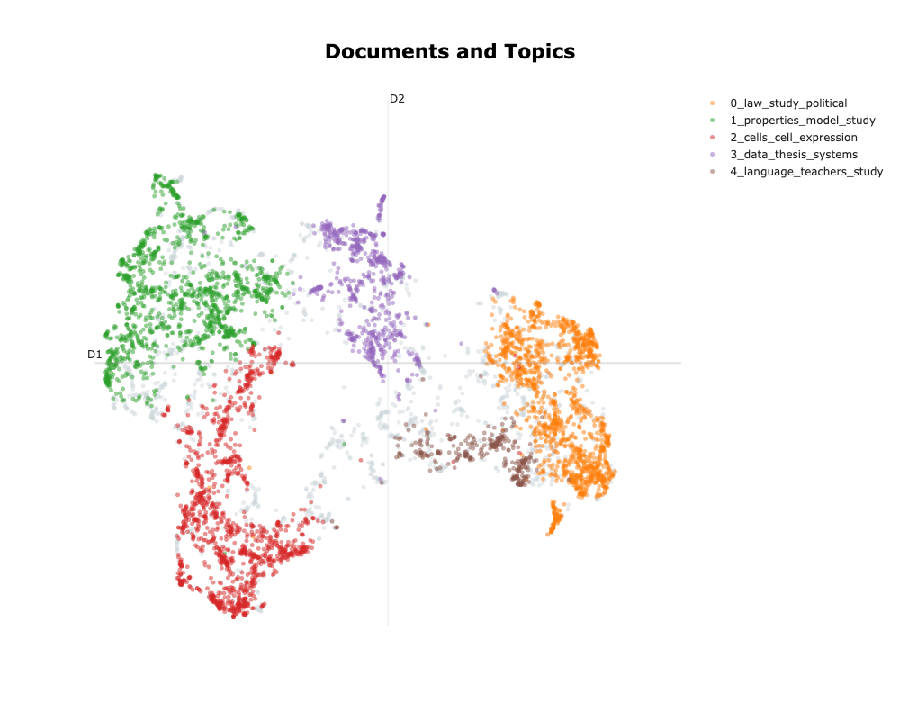

BERTopic Tutorial
Ne pas se focaliser que sur l’exploratoire
Need to rerun it all and double check comments
Introduction
What are the main issues adressed in a set of documents ? Are those documents similar or discussing different issues ? What is the most important topic ? Delineating the main topics in a set of documents is a common task in social sciences; especially when working with a new corpus. Of course, identifying the topics can be done by hand, reading each document. But when dealing with large corpora, this task is almost impossible; hence, for quite some time now, social scientists have used topic modelling techniques to quickly extract the main themes in their corpus (Asmussen & Møller, 2019), either to explore them or to attribute a label to each document to conduct further analysis.
Topic modelling is a natural language processing task that extracts latent topics structuring a corpora.
For instance, Jockers & Mimno (2013) extracted broad themes in the English literature from the 19th century.Natural language processing (NLP) is a subfield of computer science that analyses textual data. Main NLP tasks are text generation (like chatGPT), text classification, or topic modelling.

Until recently, topic modelling techniques — and natural language processing (NLP) in general — heavily relied on word counts, especially bag-of-words approaches. Amongst other limits, those approaches do not take into account the context in which a word is used — the order of the words in a sentence does not matter to those models, thus failing to grasp the complexity of the human language.
To tackle this limit, researchers developed transformations that generate richer and denser representations based on deep learning models. Those models take the text as an entry and generate a vector representation called embeddings. BERTopic is a topic model tool designed for Python that leverages transformer models1 to generate coherent topics based on the semantic similarity of texts. Since its inception in 2022, BERTopic has already proven to be useful in various research across social sciences. For instance, Bizel-Bizellot et al. (2024) used it to identify the main circumstances of infection with COVID-19 based on survey-free-text answers. In the context of climate misinformation, Törnberg & Törnberg (2025) analysed images and texts to highlight trends.
BERTopic is a brilliant tool that unlocks diverse paths but requires time to master. In this tutorial, we focus on its general philosophy and how to use it in a social science project. We will demonstrate how to start with a text corpus and create a topic model that makes sense. As a use case, we will use the database of all the theses defended between 2010 and 2022 in France and create a topic model to describe what keeps French PhD students busy!
By the end of this tutorial, you should be able to:
- Get an idea of what you can do with topic modelling in social science
- Set up a topic model on your data and make sense of the results
- Understand each step of the BERTopic pipeline and customise it
We conclude this tutorial with a discussion about the evaluation of topic modelling and good practices for reproducibility.
Python, Machine Learning and NLP prerequisites
We don’t assume that you have any knowledge about NLP and try our best to explain every step in an agnostic manner. We also provide numerous references if you want to dig deeper.
Nevertheless, you need to have some notions of Python. If you need to refresh your Python skills, you can use Lino Galina’s courses. We assume that:
- you have a working environment2 and can install packages
- you know the basic syntax of Python (functions, variables, if-statements, for loops) and you’re comfortable enough with Pandas to load your documents and proceed to simple manipulations such as creating, dropping and renaming columns and rows.
In this tutorial, we use python 3.12, and you can install the packages we will need with :
pip install -U bertopic pandas scikit-learn datasets plotly kaleido stopwordsiso nbformat ipykernelWe provide a detailed requirement file that should work for Linux and MacOS.
Material
The tutorial comes with some material uploaded on Zenodo :
- a notebook with all the code
- The original dataset (which can be downloaded here).
- A clean dataset with the cleaning code.
Understanding BERTopic
The BERTopic pipeline
The BERTopic pipeline takes a list of text documents and returns meaningful topics as well as a mapping from the text documents to the said topics. The goal is to be able to gather documents that are semantically close in clusters and then describe these topics for further interpretation. Once you have a set of topics, you can come back to the corpus to describe its composition.
Here is a basic usage of BERTopic:
from bertopic import BERTopic
# Load your documents
documents = [
"My cat is the cutest.",
"Offer your cat premium food.",
"The Empire State Building is 1,250 feet tall",
]
# Create a BERTopic object
topic_model = BERTopic()
# Fit your model to your documents
topic_model.fit(documents)
# Predict the topics and probabilities
topic, probabilities = topic_model.transform(documents)
# Or do it all at once
topic, probabilities = topic_model.fit_transform(documents)The methods fit, transform, and fit_transform belong to a common syntax in machine learning systematized by Scikit-learn, one of the first and most complete machine learning library in Python. A vanilla model is fitted on the data (parameters are tweaked), and then the model is used to make predictions on new data.
The transformation produces two outputs.
The topic variable is a list containing integers: for each document, the integer represents the topic/group it belongs to. In our case, topic = [0, 0, 1] as the first 2 documents mention cats, whereas the last document is about the Empire State Building.
The probabilities variable is a list of floats: for each document, the float represents how close it is to the topic.
We can then retrieve topic information that will return keywords that best represent our corpus:
topic_info = topic_model.get_topic_info()The topic_info variable is a table like this :
| Topic | Count | Name | Representation | Representative_Docs |
|---|---|---|---|---|
| 0 | 2 | 0_cat | “cat” | “My cat is the cutest” |
| 1 | 1 | 1_building | “building” | “The Empire State Building is 1,250 feet tall” |
The Topic column lists the topic IDs, the Count column lists the number of element there are in each topic, the Name column is a summary of topic ID and keywords — listed in the Representation column, and finally the Representative_Docs lists example of documents that are representative of the topic.
In reality, this example would not run because there are not enough documents! Let’s have a look at what one can expect from BERTopic, working with a real dataset: the abstracts of all the theses defended in France since 2010. After carefully setting the parameters and verifying the topic model’s quality, we obtain the following results:
| Topic | Count | Name | Representation |
|---|---|---|---|
| 0 | 500 | 0_XXX | XXXX |
| 1 | 500 | 1_XXX | XXXX |
| 2 | 500 | 2_XXX | XXXX |

Breaking down the process
Under the hood, BERTopic does three main steps :
- Generates a mathematical representation that captures the semantic properties of each document — the embeddings.
- Based on the embeddings, it will identify groups of documents that are semantically close (this action is called clustering). The hope is that these groups represent latent topics of the corpus.
- For each identified topic/group, it will retrieve keywords that best describe the specificity of each topic.
How to generate the embeddings?
To generate the embeddings we use encoder models. Encoder models are a type of pre-trained transformer models3 whose job is to encapsulate the semantic of textual data. A good example of encoder is the BERT model and all it’s successors like RoBERTa, DeBERTa … For generating embeddings, BERTopic uses SBERT. Encoder models can take in a limitted number of tokens (parts of words), this is called the context window size. For smaller models, the context window size is of about 500 tokens (200 words on average) like for BERT and larger models like ModernBERT have a context window size of 8,000 tokens.
The embeddings — ie the generated vectors, contain hundreds of dimensions (for instance, the dimension of BERT’s embeddings is 512). Clustering algorithms work poorly with this many dimensions4 so we need to reduce the dimensionality of the embedding space (typically between 2 and 10). To reduce the dimensionality, the BERTopic pipeline uses the UMAP algorithm for it’s ability to grasp local and global structures (McInnes et al., 2018)5. This mean that, despite moving from several hundreds of dimensions to only a couple, documents that are close together will stay close and distant ones will stay further apart. This is a critical step as we are heavily changing the structure of the data.
On dimensionality reduction:
- XX
On UMAP:
How to generate clusters
The goal for the clustering algorithm is to create groups of documents that are semantically close. We are not certain that the output clusters will be “real” topics, but we tune the BERTopic pipeline in order for the clusters to be representatives of topics that are latent in our corpus.
Different algorithms can be used for clustering. HDBSCAN was chosen for it’s ability to detect clusters based on their density, hence it is able to detect clusters of various shapes and density. HDBSCAN also allows for documents to be labeled as noise to primarily focus on dense and coherent groups.
On clustering:
- XXX
On HDBSCAN:
How to retrieve relevant keywords for each topic
Once we have created groups of documents, we need to create a meaningful representation with keywords. The general idea in BERTopic is to identify keywords that best describe the specificity of each topic.
To achieve that, it needs to come back to the text document and discompose it at the word level6. It uses word-count-based techniques that will count the number of occurrences of each word7 in each document. However, there are plenty of words we don’t want to count because they do not carry much semantic information (ex: “the”, “I”, “is”, “but”, … ). These words are called stop words and are skipped.
To do so, we use the CountVectorizer object that will create a word x document matrix.
Given the two following documents:
- “My cat is the cutest.”,
- “Offer your cat premium food.”,
The word x document matrix would be:
| doc 1 | doc 2 | |
|---|---|---|
| cat | 1 | 1 |
| cutest | 1 | 0 |
| offer | 0 | 1 |
| premium | 0 | 1 |
| food | 0 | 1 |
The word x document matrix is never used as is and needs transformation to outline relevant words. The usual transformation is called TF-IDF. This transformation raises the score of words that appear often in a document and decreases the score of words that appear in many documents. In BERTopic, they use an alternative called c-TF-IDF. This transformation raises the score of words that appear often in documents of the same group and decreases the score of words appearing in other groups. With this transformation, we retrieve words that make a group unique!
Conclusion
To sum it up we have:
- First, generate embeddings that encapsulate semantic information with SBERT and reduce the dimensionality of vectors to a manageable number of dimensions with UMAP.
- Then create groups of semantically close documents with HDBSCAN. Each group can represent latent topics in our corpus.
- Create meaningful representations of each topic by counting words in the documents with CountVectorizer and outline the most representative words with c-TF-IDF.

Hands on with Python
Now we understand broadly the BERTopic pipeline, let’s see how to apply it to our dataset.
Preprocessing your data
As mentioned before, we will use the dataset listing all theses defended in France since 1985. The original dataset can be downloaded on data.gouv.fr. To avoid excessive pre-processing, we curated8 the dataset and uploaded it (with the code) on Zenodo.
It is crucial to stress that the preprocessing step is the most important step. Although we can tune the topic model towards meaningful clusters and representations, your corpus is your input and no model will generate good results out of poor inputs. We list a number of questions you need to consider and justify for your topic model to be relevant:
Is my corpus homogenous enough ?
It could be tempting to shove millions of different documents from different sources in a topic model and see what comes out. However, to make sure that the groups will represent topics, one must be sure that your documents are similar in formality, tone, length, density of information etc… If your corpus is too heterogenous, the topic model can highlight theses differences and you will lose sight of meaningful latent topics9.
In our case, as we analyse theses resumes which are quite standardised, the corpus should be homogenous enough for the topic model to pick up topics and not other semantic dimensions.
Are my documents in the right language?
Most of the time, language models are trained in a single language. Some models are said multi-lingual and accept texts in more than one language. However, in our experience, working with documents in different languages generates poor topics as the language shift holds for the most salient difference and each language is clustered by itself. We recommend translating your documents in a single language beforehand.
In our case, the data curation allowed us to extract theses where both the english and french resumes were provided and we will work with resumes in each language separately.
How long are my documents?
One need to precisely define their task before diving into topic modelling. What are you trying to analyse? Will this information be available at the sentence level? paragraph level? the document level?
In our case, the topic of the theses will be described throughout the resume, hence the resumes must be taken as a whole and not subdivided at the sentence level.
Also, as introduced before, each embedding model has a context window, meaning that long documents will be truncated. One must make sure that the length of the documents in their corpus is smaller than the model’s context window. If the context window is too small consider changing embedding model. Careful though, larger context window means longer computation time and greater computation resources required to run the model.
We will confirm the length of our documents before calling the embedding model.
Let’s code!
Let’s load the dataset:
df_raw = pd.read_csv("./data/theses-soutenues-curated.csv")The dataset contains the following columns :
CI: Custom index, values areCI-XXXX, withXXXXranging from 0 to 164,378year: the year of the defence, values are integers ranging from 2010 to 2022oai_set_specs: the oai code, each code looks likeddc:XXX, for instanceddc:300refers toSciences sociales, sociologie, anthropologie.resumes.enandresumes.fr: the resumes of the thesis, respectively in english and french. We are sure that every row contains a valid resume in the right language thanks to the data curation.titres.enandtitres.fr: the titles of the thesis, respectively in english and french. Only 5% of the rows do not have a valid title (french or english). The language of the titles has not been checked because it will only be used to check the qualitative validity of topic model. Refer to the notebook to see the code.topics.enandtopics.fr: the aggregated topics provided by the author. Only 5% of the rows do not have valid topics (french or english). The language of the topics has not been checked because they will only be used to check the qualitative validity of topic model.
Let’s take some time to check if our documents fit inside the context window. To retrieve the context window size, you can check the hugging face page of the model or load the config as such:
config = AutoConfig.from_pretrained(model_name, trust_remote_code = True)
print(f"Context window size of the model {model_name}: {config.max_position_embeddings}")Let’s look at two models, sentence-transformers/all-MiniLM-L6-v2 (default embedding model in the BERTopic pipeline) and Alibaba-NLP/gte-multilingual-base.
>>> Context window size of the model sentence-transformers/all-MiniLM-L6-v2: 512
>>> Context window size of the model Alibaba-NLP/gte-multilingual-base: 8192And now let’s look at the length of our documents:
df_raw["resumes.en.len"] = df_raw["resumes.en"].apply(len)
df_raw["resumes.fr.len"] = df_raw["resumes.fr"].apply(len)
df_raw.loc[:,["resumes.en.len", "resumes.fr.len"]].describe()| resumes.en | resumes.fr | |
|---|---|---|
| min | 1 | 6 |
| 25% | 1324 | 1508 |
| 50% | 1617 | 1702 |
| 75% | 2080 | 2362 |
| max | 12010 | 12207 |
| mean | 1777 | 1984 |
| std | 735 | 802 |
With these statistics, we see that we can rule out using sentence-transformers/all-MiniLM-L6-v2 because it’s context window is too narrow. By keeping resumes between 1000 and 4000 characters (ie between 300 and 1300 tokens10) we can keep most of the dataset (89%) while maintaining a reasonable computation time.
valid_index = np.logical_and.reduce([
df_raw["resumes.fr.len"] >= 1000,
df_raw["resumes.fr.len"] <= 4000,
df_raw["resumes.en.len"] >= 1000,
df_raw["resumes.en.len"] <= 4000,
])
df = df_raw.loc[valid_index,:]Even if it is more interesting to process the complete dataset, it can be computationally expensive. To limit computation time at least for the exploratory steps, we are going to work on a sample of documents. To maintain some representativeness, we stratify this sampling by the year of the defence11.
stratification_column = "year"
samples_per_stratum = 500
df_stratified = (
df
.groupby(stratification_column, as_index = False)
.apply(lambda x : x.sample(n = samples_per_stratum), include_groups=True)
.reset_index()
.drop(["level_0", "level_1"], axis = 1)
)
# Save the preprocessed dataset
df_stratified.to_csv("./data/theses-soutenues-curated-stratified.csv", index=False)The resulting stratified table contains 6500 rows.
Create a BERTopic instance, fit and transform
To create a topic_model object we need to create a BERTopic object and define some parameters. For now, we will not change the default parameters of the clustering model (hdbscan_model) or the dimension reduction model (umap_model). We will however define the language of the corpus as well as the vectorizer model in order to remove all stopwords and retrieve meaningful topics. Then, one must use the fit method to fit the topic model to the corpus.
language = "english" # or "french"
language_short = language[:2] # "en" or "fr"
embedding_model = "answerdotai/ModernBERT-base"
docs = df_stratified[f"resumes.{language_short}"]
vectorizer_model = CountVectorizer(stop_words = list(stopwords(language_short)))
topic_model = BERTopic(
language = language,
embedding_model = embedding_model,
vectorizer_model = vectorizer_model,
)
topic_model.fit(documents=docs)This snippet of code takes a long time to run (>10 mins) as each element must be embedded first. To avoid unnecessary computation time, we have embedded 6500 elements with several models for the french and english resumes that you can download from Zenodo. The code changes as such:
language = "english" # or "french"
language_short = language[:2] # "en" or "fr"
# Load the embeddings directly to avoid long computation time
ds = load_from_disk(f"./data/embeddings/gte-multilingual-base-{language_short}-SBERT")
docs = np.array(ds[f"resumes.{language_short}"]) # 6500 rows
embeddings = np.array(ds["embedding"]) # Shape : 6500 x 768
vectorizer_model = CountVectorizer(stop_words = list(stopwords(language_short)))
topic_model = BERTopic(
language = language,
vectorizer_model = vectorizer_model,
)
topic_model.fit(documents=docs, embeddings=embeddings)Now to extract the topics, we need to call the transform method :
topics, probabilities = topic_model.transform(documents=docs, embeddings=embeddings)And to explore the topics we can call the get_topics_info method that will return a table with the keywords, representative documents and the number of documents in each topic:
topic_info = topic_model.get_topic_info()
topic_info| Topic | Count | Representation | |
|---|---|---|---|
| 0 | -1 | 2715 | [‘study’, ‘thesis’, ‘model’, ‘based’, ‘analysis’, ‘data’, ‘process’, ‘approach’, ‘development’, ‘social’] |
| 1 | 0 | 262 | [‘literary’, ‘writing’, ‘art’, ‘contemporary’, ‘authors’, ‘poetry’, ‘narrative’, ‘history’, ‘texts’, ‘poetic’] |
| 2 | 1 | 172 | [‘mechanical’, ‘numerical’, ‘behavior’, ‘material’, ‘crack’, ‘model’, ‘materials’, ‘experimental’, ‘element’, ‘finite’] |
| 3 | 2 | 172 | [‘cells’, ‘cancer’, ‘tumor’, ‘cell’, ‘immune’, ‘expression’, ‘patients’, ‘melanoma’, ‘tumors’, ‘response’] |
| 4 | 3 | 155 | [‘flow’, ‘numerical’, ‘fluid’, ‘acoustic’, ‘flame’, ‘flows’, ‘model’, ‘simulations’, ‘method’, ‘experimental’] |
| … | … | … | … |
| 102 | 101 | 10 | [‘influenza’, ‘vaccination’, ‘meningitis’, ‘virus’, ‘infection’, ‘pedv’, ‘nmx’, ‘h5n1’, ‘serogroup’, ‘dbs’] |
| 103 | 102 | 10 | [‘ablation’, ‘atrial’, ‘intracranial’, ‘vein’, ‘cardiac’, ‘fibrillation’, ‘icp’, ‘phantoms’, ‘catheter’, ‘veins’] |
| 104 | 103 | 10 | [‘building’, ‘ventilation’, ‘thermal’, ‘heat’, ‘cooling’, ‘wall’, ‘air’, ‘buildings’, ‘comfort’, ‘heating’] |
| 105 | 104 | 10 | [‘humins’, ‘tannins’, ‘biobased’, ‘foams’, ‘composites’, ‘tannin’, ‘biocomposites’, ‘cab’, ‘materials’, ‘lignin’] |
The “Representation” column provides the keywords for each topic. We can see that the keywords retrieved for the noise cluster are very generic: “study”, “thesis”, “model”, “analysis”, “approach” and do not convey any meaningful information other than the fact that all documents are academic documents.
For each topic the model retrieves very specific keywords that fit together such as:
- ‘mechanical’, ‘numerical’, ‘model’, ‘finite’, ‘element’: this cluster may be grouping theses related to numerical simulation in mechanics using the finite element method.
- ‘cells’, ‘cancer’, ‘tumor’, ‘immune’, ‘patients’: this cluster may be grouping theses related to cancer and cures.
- ‘building’, ‘ventilation’, ‘heat’, ‘cooling’: this cluster may be grouping theses related to the thermodynamics of buildings.
This is not a proof that our model generated interesting results, for that we need to carry further investigation of each cluster, still this is a first step towards appreciating the quality of the topic model.
In this table we can see that almost half of the documents are classified as noise (topic -1). This is a normal behaviour of the clustering algorithm as it focuses on dense areas first. This way, the topic model creates representations that focus fewer documents to retrieve very specific keywords. The other 104 topics contain between 10 and 200 documents each, which correspond to 0.1% to 3% of the corpus.
It is worth noting that the more documents in a cluster, the lower the topic index is.
It is possible to re-assign clusters to documents clustered as noise with the reduce_outliers12 method, based on XXXX:
topics_reduced = topic_model.reduce_outliers(
documents = docs,
topics = topics,
probabilities = probabilities,
embeddings = embeddings,
strategy="embeddings"
)The topic model is not altered and keywords are not re-generated.
How to visualise your results
Visualising your topics is central in topic modelling as this is most convenient way to explore your documents and your topic model. We are going to cover some of the most basic and helpful visualisations.
2D plot
The first thing we want to visualise is the space of the embeddings reduced to 2 dimensions. This is a good start to visualise the size of your clusters and if close clusters have similar topics.
(
topic_model
.visualize_documents(
docs = docs,
embeddings = embeddings,
hide_annotations = True, # better readability
topics = [0,1,2,3] # Select topics to highlight
# height = 300, # Adjust the height of the plot
# width = 800 # Adjust the width of the plot
)
)On this graph only displaying the 4 top topics, we can see that the cluster are large and dense. We can see that the “1_mechanical_numerical_behavior” and the “3_flow_numerical_fluid” are close, as expected whereas “0_literary_writing_art” and “2_cells_cancer_tumor” are further apart in separate directions.
Visualise top words per topic
The second helpful visualisation is to illustrate the top \(n\) words that represent each topic and how representative they are of a given topic. It is a good way to analyse the consistency of each topic and get a sense of the documents inside a cluster.
topic_model.visualize_barchart(
n_words = 10, # Select the number of words to display per topic
# topics = [0,1,2,3,4], # Select specific topics to display
# top_n_topics = 6, # Select the first n topics to display
# height = 300, # Adjust the height of the plot
# width = 800 # Adjust the width of the plot
)
Take the topic n°5, we can see keywords like “urban”, “land”, “city”, “local”, “public” and “ecological”. These keywords make sense together and we can imagine theses discussing urban planning at different scales and under different constraints.
Hierarchical graphs
A good way to visualise how topics interact with each other is to plot a dendogram. This plot is read from left to right, the sooner branches merge, the closer related topics are. We use the visualize_hierarchy method. The graph is very tall but we can easily focus on one subset of the tree at a time.
fig = topic_model.visualize_hierarchy()
At the very top of this graph, we can see the green branches related to laws and international rights, very close to contract legislation. This is a good sign that these three branches merge together and that we dont find legislation-related keywords anywhere else in the three.
Additional visualisations
If you have additional tags for your dataset, such as categories or dates, you can easily display your topic analysis in regard of these dimensions.
In our case, we have OAI codes that account for the field each thesis is in. Hence we can compare the generated topics with the fields.
# some theses are in multiple fields,
# the oai code is:
# ddc:XXX||ddc:YYY
# for simplicity, we are going to keep the first field for each thesis
first_oai = [oai_code[:7] for oai_code in ds["oai_set_specs"]]
# Let's translate that to human language:
oai_names = {
"ddc:300" : "Sciences sociales, sociologie, anthropologie",
"ddc:340" : "Droit",
"ddc:004" : "Informatique",
"ddc:570" : "Sciences de la vie, biologie, biochimie",
"ddc:540" : "Chimie, minéralogie, cristallographie",
"ddc:620" : "Sciences de l'ingénieur",
"ddc:550" : "Sciences de la terre",
"ddc:530" : "Physique",
"ddc:510" : "Mathématiques",
"ddc:610" : "Médecine et santé"
}
def retrieve_name(oai_code):
if oai_code in oai_names:
return oai_names[oai_code]
else :
return "Autre"
first_oai_names = [retrieve_name(oai_code) for oai_code in first_oai]
topics_per_class = topic_model.topics_per_class(docs, classes=first_oai_names)
topic_model.visualize_topics_per_class(
topics_per_class,
topics = [0, 1, 2, 3], # choose specifically which topics to display
# top_n_topics = 10, # choose to display the 10 largest topics
)
In this figure, we can start by checking that documents are associated to the right topic. For instance, it is coherent to see that documents of the topic ‘1_mechanical_numerical_behavior’ are found in theses in Physics, Engineering Sciences; and that theses of the topic ‘2_cells_cancer_tumor’ are found in theses in Health and Medicine as well as in Biology and Biochemistry.
If you want to visualise your topics on a temporal axis, you can use the the visualize_topics_over_time method.
year = [int(float(year_as_string)) for year_as_string in ds["year"]]
topics_over_time = topic_model.topics_over_time(docs = docs, timestamps=year)
topic_model.visualize_topics_over_time(topics_over_time, topics = [0,1,2,3])
Aggregate topics
Need further research, the reduce to n topic method does not use the hierarchical clustering of hdbscan, which is odd
It seems like hdbscan is not chose to perform
il y a une divergence entre la manière de visualiser la hierarchie et d’agréger les sujets ce qui fait que le lien est pas évident évident:
- visualize_hierarchy: uses ward linkage on c-tf-idf
- reduce_to_n_topics : uses average linkage on embeddings
😬 <- me, ie lost
In our case, with more than 100 topics, it is difficult to have a general idea of the main latent themes in the corpus. Looking back to the Figure 6 we can identify seven large branches we could reduce our topic model to.
topic_model.reduce_topics(docs = docs, nr_topics=7 + 1) #Add one to account for the noise
#Retrieve the updated topics and probabilities
topics_reduced, probabilities_reduced = topic_model.topics_, topic_model.probabilities_Then check the new representations like in the section Section 3.3.
topic_info_reduced = topic_model.get_topic_info()
topic_info_reduced| Count | Name | Representation |
|---|---|---|
| 2715 | -1_study_thesis_model_based | [‘study’, ‘thesis’, ‘model’, ‘based’, ‘analysis’, ‘data’, ‘approach’, ‘process’, ‘development’, ‘properties’] |
| 1037 | 0_study_analysis_social_thesis | [‘study’, ‘analysis’, ‘social’, ‘thesis’, ‘french’, ‘political’, ‘century’, ‘approach’, ‘time’, ‘history’] |
| 795 | 1_cells_cell_expression_role | [‘cells’, ‘cell’, ‘expression’, ‘role’, ‘species’, ‘study’, ‘patients’, ‘protein’, ‘cancer’, ‘involved’] |
| 707 | 2_model_numerical_study_method | [‘model’, ‘numerical’, ‘study’, ‘method’, ‘experimental’, ‘thesis’, ‘flow’, ‘based’, ‘models’, ‘properties’] |
| 634 | 3_data_thesis_systems_model | [‘data’, ‘thesis’, ‘systems’, ‘model’, ‘propose’, ‘based’, ‘approach’, ‘proposed’, ‘network’, ‘time’] |
| 464 | 4_properties_magnetic_surface_synthesis | [‘properties’, ‘magnetic’, ‘surface’, ‘synthesis’, ‘materials’, ‘studied’, ‘study’, ‘temperature’, ‘nanoparticles’, ‘reaction’] |
| 135 | 5_law_legal_international_rights | [‘law’, ‘legal’, ‘international’, ‘rights’, ‘european’, ‘monetary’, ‘financial’, ‘constitutional’, ‘policy’, ‘economic’] |
| 13 | 6_detection_biosensor_biosensors_based | [‘detection’, ‘biosensor’, ‘biosensors’, ‘based’, ‘dna’, ‘sers’, ‘surface’, ‘splitaptamer’, ‘spr’, ‘sensor’] |
Similarly to before, the noise topic contains very generic keywords. As for the rest, we can identify seven14 main latent topics :
- Social Sciences
- Medicine and Health
- Engineering Sciences, Experimentation and Simulation
- Data analysis and Mathematics
- Physics
- Law, Finance and Policies
- Biochemisty and sensors
The topics are very general and give us key insights about our corpus.
It is important to notice that the very detailed analysis was useful to understand the more general one. For instance, the keywords for the second main topic are too general, but because we analysed our documents in details, we know that this topic is the result of merging “1_mechanical_numerical_behavior” and “3_flow_numerical_fluid”, allowing us to name this topic “Engineering Sciences, Experimentation and Simulation”.
After reducing outliers, here is the distribution of topics across all out documents :
| Topic | Count | Proportion | |
|---|---|---|---|
| Social Sciences | 0 | 1749 | 27 % |
| Medicine and Health | 1 | 1328 | 20 % |
| Engineering Sciences, Experimentation and Simulation | 2 | 1106 | 17 % |
| Data analysis and Mathematics | 3 | 1073 | 17 % |
| Physics | 4 | 803 | 12 % |
| Law, Finance and Policies | 5 | 410 | 6 % |
| Biochemisty and sensors | 6 | 31 | 0 % |
Finally, the 7th topic still seem very specific, even after reducing outliers, there are only 31 documents in this topic.
Careful though, even if the previous results let us think the topic model is coherent, we have not evaluated it yet.
Tune parameters
In this section, we propose to tune the 3 main parameters outlined by research papers and confirmed by our experience: the embedding model, n_neighbors (UMAP) and n_components (HDBSCAN). A table can be found in the techy notes providing descriptions for other parameters.
1.Assess the quality of the embedding space (parameters tuned: embedding model)
The first step is to choose the embedding model as it drastically alters the results of the topic model. To do this, you can embed your documents and plot the 2D map after dimension reduction with UMAP and n_components=2. Then, by exploring the map, you can assess if the embedding space created placed similar documents together or not.
At this point you can also try different values for n_neighbors and n_components. However, be aware that the influence of UMAP parameters on the final topic model is difficult to appreciate at first glance.
Tune the granularity of the topic model (parameters tuned: n_neighbors and min_cluster_size)
Once you’ve chose the embedding model to use, you can change the n_neighbors and min_cluster_size. Both work jointly: the lower these paramters, the smaller grain and more specific the topics.
To change these parameters, one must create UMAP and HDBSCAN instances and pass them on to the BERTopic model:
# Load data and create the vectorizer model like before
language = "english" # or "french"
language_short = language[:2] # "en" or "fr"
ds = load_from_disk(f"./data/embeddings/gte-multilingual-base-{language_short}-SBERT")
docs = np.array(ds[f"resumes.{language_short}"]) # 6500 rows
embeddings = np.array(ds["embedding"]) # Shape : 6500 x 768
vectorizer_model = CountVectorizer(stop_words = list(stopwords(language_short)))
# create an HDBSCAN and UMAP models
hdbscan_model = HDBSCAN(
min_cluster_size=50,
# Default parameters
prediction_data=True
)
umap_model = UMAP(
n_neighbors = 50,
# Default parameters
metric = "cosine",
n_components = 5,
min_dist=0.0,
low_memory = False
)
# Then create the instance, fit the model and extract the topics and probabilities
topic_model = BERTopic(
language = language,
vectorizer_model = vectorizer_model,
umap_model= umap_model,
hdbscan_model=hdbscan_model
)
topics, probabilities = topic_model.fit_transform(
documents=docs,
embeddings=embeddings
)We obtain the following results:
| Topic | Count | Representation |
|---|---|---|
| -1 | 1422 | [‘study’, ‘thesis’, ‘model’, ‘based’, ‘data’, ‘analysis’, ‘method’, ‘process’, ‘approach’, ‘developed’] |
| 0 | 1399 | [‘law’, ‘study’, ‘political’, ‘social’, ‘thesis’, ‘public’, ‘legal’, ‘analysis’, ‘economic’, ‘international’] |
| 1 | 1339 | [‘properties’, ‘model’, ‘study’, ‘materials’, ‘experimental’, ‘temperature’, ‘thesis’, ‘method’, ‘studied’, ‘based’] |
| 2 | 1329 | [‘cells’, ‘cell’, ‘expression’, ‘study’, ‘role’, ‘protein’, ‘species’, ‘model’, ‘activity’, ‘involved’] |
| 3 | 706 | [‘data’, ‘thesis’, ‘systems’, ‘propose’, ‘based’, ‘model’, ‘proposed’, ‘approach’, ‘network’, ‘methods’] |
| 4 | 305 | [‘language’, ‘teachers’, ‘study’, ‘education’, ‘students’, ‘french’, ‘school’, ‘teaching’, ‘analysis’, ‘social’] |

Discussion on evaluating a topic model
Topic model evaluation is an active domain of research that goes beyond the scope of this tutorial. We propose an overview of the methods that exist and how to quickly tell if your topic model can be used or need to be refined.
In short: quantitative methods are impractical and one should focus more on the qualitative evaluation.
Qualitative evaluation
All along the tutorial, we have displayed many results and analysed them with the objective to answer the very question: is the topic model coherent? There is no one way around qualitatively evaluating your BERTopic, however the point is to offer some techniques we found useful and code snippet to quickly obtain key insights on your topic model performance.
Explore the 2D map
As depicted in Section 3.6, exploring the 2D map is a good way to explore the embedding space and tell if groups are made out of similar documents. It’s even better if you have additional tags that can make the exploration even faster.
Explore the merging process
When merging topics at Section 3.5 we may want to monitor what’s going where. The following snippet prints out the topics that were merged into them:
for iRow_reduced, topic_id in enumerate(topic_info_reduced["Topic"]):
print(topic_info_reduced.loc[iRow_reduced, "Name"].replace("_", " "))
og_topics_merged_to_new_topic = list(set([
int(og_topic)
for og_topic, new_topic in zip(topics, topics_reduced)
if new_topic == topic_id
]))
for og_topic in og_topics_merged_to_new_topic:
print(
"\t - ",
topic_info.loc[
topic_info["Topic"] == og_topic,
"Name"
]
.item()
.replace("_", " ")
)
print("---")>>> ...
>>> 5 law legal international rights
>>> - 66 monetary policy inflation exchange
>>> - 70 contract law contractual subsidy
>>> - 46 constitutional judge legal council
>>> - 22 international law european rights
>>> - 89 financial law tax transactions
>>> - 58 financial economic banks growth
>>> ...In this example we can confidently assess that the merge is coherent as it groups all law related topics into one.
Explore the reason why a given document was clustered in a specific group
In our example, we have
OAI_REFS = pd.read_csv("./data/oai_codes.csv")
DS = ds
def get_docs_for_oai_code(oai_code : str):
try:
oai_name = OAI_REFS.loc[OAI_REFS["code"] == oai_code, "name"].item()
except Exception:
print(f"oai code {oai_code} invalid")
return
def return_name(codes):
if oai_code in codes: return oai_name
else: return "Autre"
classes = [return_name(codes) for codes in ds["oai_set_specs"]]
topics_per_class = topic_model.topics_per_class(docs, classes = classes)
topics_per_class = topics_per_class.loc[topics_per_class["Class"] == oai_name, :].set_index("Topic")
topics_name = (
topic_model
.get_topic_info()
.set_index("Topic")
["Name"]
)
topics_per_class.loc[:,"Topic Name"] = topics_name
return topics_per_class.loc[topics_per_class["Class"] == oai_name, :]
get_docs_for_oai_code("ddc:000")Quantitative evaluation
In this section we introduce different metrics that can be used to evaluate your topic model. However, we mainly included it to warn you of the complexity behind evaluating a topic model and that there is no one-fit-all solution.
First, choosing the coherence score by itself can have a large influence on the difference in performance you will find between models. For example, NPMI and UCI may each lead to quite different values. Second, the coherence score only tells a part of the story. Perhaps your purpose is more classification than having the most coherent words or perhaps you want as diverse topics as possible. These use cases require vastly different evaluation metrics to be used.
Response to “How to evaluate the performance of the model?” by Maarten Grootendorst source
There are two types of metrics that you could use:
- Cluster metrics — ie focus on the group making. There exist a lot of metrics, but few are fit to our situation: unsupervised learning with density based algorithms. In our experience, optimising these metrics result in a sub-optimal solutions as illustrated bellow. Read more
- Topic representation metrics — ie focus on how relevant the keywords are. Although some metrics exist their utility is limited: good score does not necessarily align with what expert consider good topic models, and they are not good scores to optimise (Stammbach et al., 2023). Read more
Good practices
Precompute your embeddings
Pre-computing the embeddings is a good practice as it will prevent from computing them at each run, but also because it allows you to use a broader spectrum of embedding models that could ne necessarily be used with BERTopic15. We retrieve the embeddings and the documents
ds = load_from_disk("path/to/file")
docs = np.array(ds[f"resumes.en"]) # Number of documents : 6500
embeddings = np.array(ds["embedding"]) # shape : (6500, 768)The columns in the dataset are the same as before in addition to an embedding column containing the embeddings of the resumes.
Save your instance locally
For reproducibility purposes, and more generally, to save your work, BERTopic lets you do that with the save method. Two parameters of importance:
serialization (str): must be"safetensors","pickle"or"pytorch". We recommend to use"safetensors"or the"pytorch"format as they are broadly used in machine learning and recommended by the BERTopic documentation16.save_ctfidf (bool): wether to save the vectorizer configuration or not. This is the heaviest bit (see table below).
# ~ 500 KB
topic_model.save(
path = "./bertopic-default",
serialization = "safetensors",
save_ctfidf = False
)
# ~ 6MB
topic_model.save(
path = "./bertopic-default-with-ctfidf",
serialization = "safetensors",
save_ctfidf = True
)For more information on the content of what’s saved and the size of files.
The to reload your instance you just need to use the load method:
topic_model = BERTopic.load("./bertopic-default")Saving the instance is a good practice, as we will see below, when reducing the number of topics, the instance is updated and you can’t go back. Hence, we would recommend to save at least one instance — or rerun the whole cell.
Bibliography
Footnotes
the name “transformer models” refers to a specific neural netword designed popularised by Vaswani et al. (2017), most if not all current Language models rely on this architecture.↩︎
“Pre-Trained” means that the model has already been trained on millions of documents and perform. “Transformer” is the name of a neural network architecture broadly used in machine learning.↩︎
For example, running the topic model with no dimensionality reduction takes about 10 times as much time and generates poor topics.↩︎
The UMAP algorithm is very close to the t-SNE algorithm with better scaling capabilities. Another good option for the dimensionality reduction step is the PCA algorithm that will focus on the global structure. PCA is a better choice if you solely focus on the big picture (McInnes et al., 2018, p45).↩︎
Previously, the transformer model worked at the token level.↩︎
To be accurate, we count for n-grams: n-grams are sequences of textual entities (tokens or words). In the context of topic modelling, 1-grams would be words, 2-grams would be sequences of 2 words and so on.↩︎
Disclaimer: You may want to highlight these dimensions to identify hate speech, for instance. Homogeneity has to be relevant to your use case and questioning your corpus is a part of the topic modelling pipeline that should not remain overlooked.↩︎
Rule of thumb: 1 token = 3 characters↩︎
More information on stratification in Pandas↩︎
See the techy notes for more information on the strategies used to reduce the outliers.↩︎
The space represented is not necessarily the space used during the clustering step.
UMAP(n_dimensions = 2)is run on the embeddings when plotting. Also, because UMAP is non-deterministic, the result may differ from a run to another. This explains why some dots seem far away from their cluster.↩︎We have seven topics because we asked the topic model to reduce the number of topics to seven.↩︎
Rule of thumb: 1 token = 3 characters↩︎
Disclaimer: You may want to highlight these dimensions to identify hate speech, for instance. Homogeneity has to be relevant to your use case and questioning your corpus is a part of the topic modelling pipeline that should not remain overlooked.↩︎